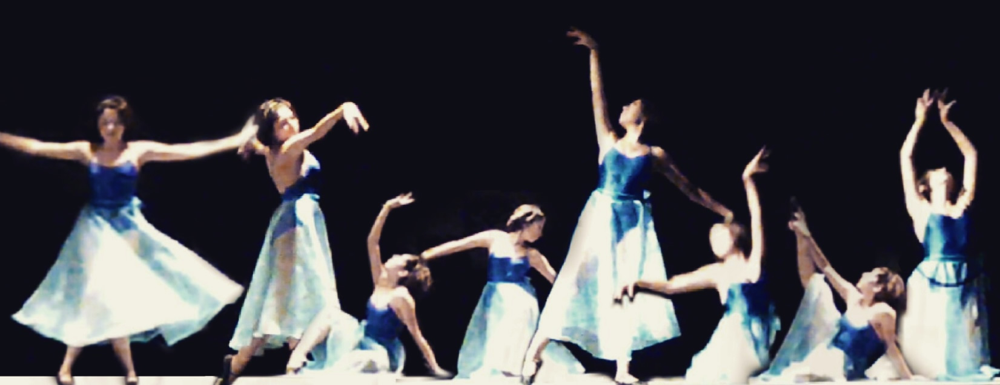
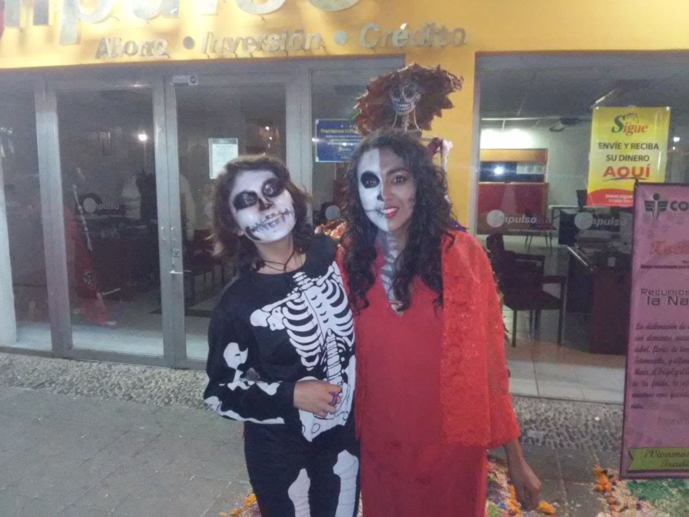
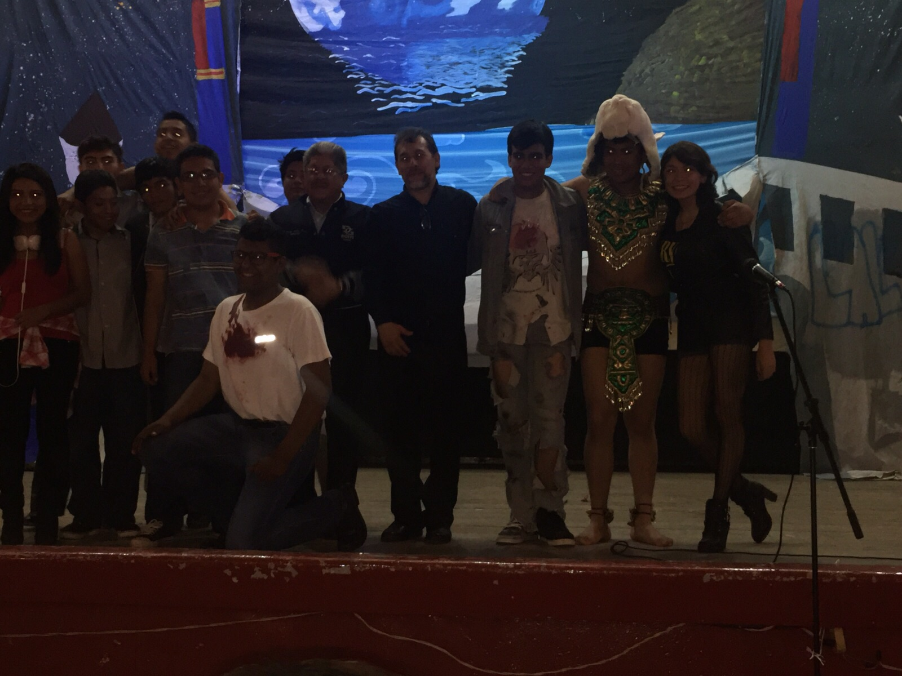
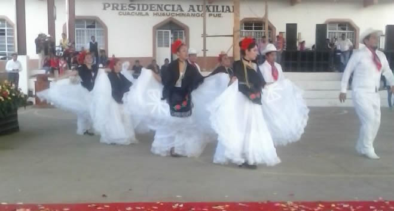

Logros
Seré sincera, no sé exactamente que decir que he logrado. Pero aquí van algunas cosas que se podrían considerar como tal.
- A los 4 años gané el concurso de belleza en el kinder
- A los 7 años gané el concurso de dibujo infantil
- A los 10 años visité los pinos en un viaje para los mejores promedios 
- A los 12 años gané 10 reconocimientos/diplomas por mejor promedio del salon, mejor promedio de la generación, primer lugar en Voleybol femenil a nivel regional, primer lugar en Voleyboy femenil a nivel estatal, por participar en la exposicion anual "por la lectura", entre otros. 
- A los 13 años viajé por primera vez al extranjero con el ballet de la prof. Lupita Garcia Aviles, a la cd. de la Paz, Bolivia. 
- A los 14 años gané el segundo lugar en el concurso de talentos, interpretando una canción de Celine Dion. Y también volví a viajar con la prof. Lupita, pero esta vez a Puerto Vallarta, Jalisco. 
- A los 15 años gané mi primera medalla de oro en ballet clasico en Six grade de la Royal Academy of Dance afiliada a Oxford

- A los 16 años participé en un curso de verano como instructora. Además participé en el encuentro de arte y cultura de la escuela.